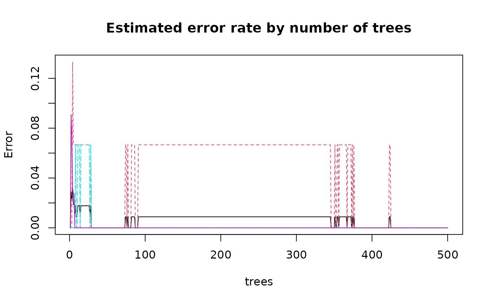
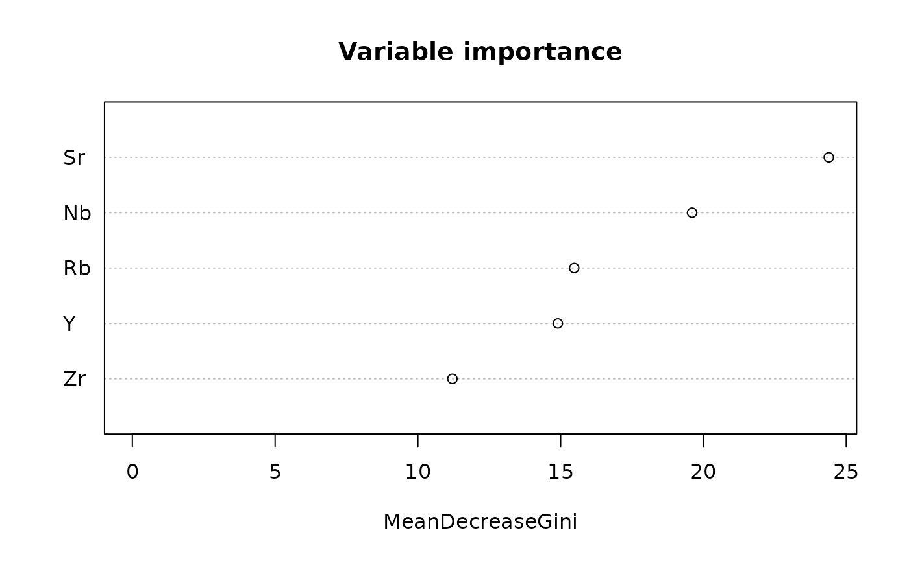
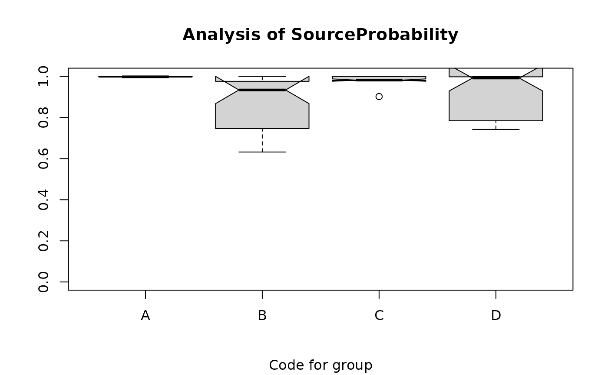
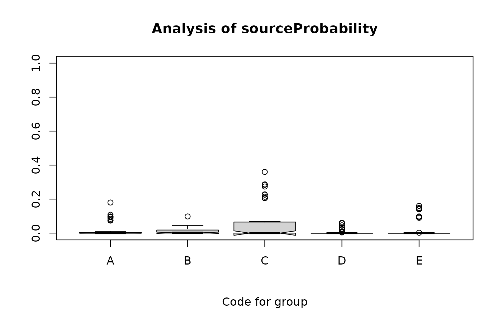

ps_randomForest
ps_randomForest.RdImplements a random forest analysis of source data, and predicts sources of unknowns if requested
Usage
ps_randomForest(
doc = "ps_randomForest",
data,
GroupVar,
Groups = "All",
AnalyticVars,
sourceID = " ",
Ntrees = 500,
NvarUsed = NA,
Seed = 11111,
digitsImportance = 1,
plotErrorRate = TRUE,
plotImportance = TRUE,
predictSources = FALSE,
predictData = NA,
unknownID = " ",
plotSourceProbs = TRUE,
folder = " "
)Arguments
- doc
Documentation for the function use added to model usage, default value is the function name
- data
A data frame with the data used to grow trees (source data if predictions are made)
- GroupVar
The name of variable defining groups, grouping is required
- Groups
A vector of codes for groups to be used, 'All' if use all groups
- AnalyticVars
A vector with names (character-valued) of the analytic variables
- sourceID
If not " " (the default), the name of the variable with sample ID for source data
- Ntrees
The number of trees grown, default value of 500 is that for the randomForest function
- NvarUsed
If not NA (the default), the number of variables to use in each random forest call to rpart; if NA, rpart uses the default value for randomForest() (the square root of the number of candidate variables)
- Seed
If not NA, a random number generator seed to produce reproducible results; default value is 11111
- digitsImportance
The number of significant digits for the importance measure, default is 1
- plotErrorRate
Logical, whether to show the error rate plot, default is TRUE
- plotImportance
Logical, whether to show the plot of variable importance, default is TRUE
- predictSources
Logical; if T, predict sources for the data in predictData; default is FALSE
- predictData
A data frame or matrix with data used to predict sources for observations, must contain all variables in AnalyticVars_
- unknownID
if not " " (the default), the name of the variable with the sample ID for artifact data
- plotSourceProbs
Logical, if TRUE (the default) and predictSources=TRUE, show box plots of source probabilities
- folder
The path to the folder in which data frames will be saved; default is " "
Value
The function returns a list with the following components:
usage: A string with the contents of the argument doc, the date run, the version of R used
dataUsed: The contents of the argument data restricted to the groups used
sourcesNA: A data frame with data from the data frame data with missing values, NÁ if no missing values
analyticVars: A vector with the value of the argument AnalyticVars
params: A list with the values of the grouping, logical, and numeric arguments
formulaRf: The formula used in the analysis (the variables specified in the argument AnalyticVars separated by + signs)
forest: A summary of the random forest call, estimated error rate, and confusion matrix
importance: A data frame with information on the importance of each variable in AnalyticVars
confusion: A data frame with the estimate of the confusion matrix
predictedData: A data frame with the artifact data used for predictions; if there is missing data, after imputation of the missing data
predictedNA: A data frame with the observations for which missing data were imputed; NA if there are no missing data
predictedSources: A data frame with prediction information, sample ID (if requested), and values of AnalyticVars
predictedTotals: A vector with the predicted totals for each group (source)
impError: The estimated OOB (out of bag) error for imputed predictor data; NA if no imputed data
location: The value of the parameter folder
Details
The function implements a random forest analysis using the R function randomForest(). If predictSources and plotSourceProbs are TRUE, the function creates two box plots. The first plot shows, for each source, the set of probabilities of assignment to that source for the observations assigned to that source (all of these probabilities should be large). The second plot shows, for each source, the set of probabilities of assignment to that source for the observations not assigned to that source (for each source, there is one such probability for observation); these probabilities should be relatively small, and some should be zero. See the vignette for more details and examples of these plots.
Examples
data(ObsidianSources)
analyticVars<-c("Rb","Sr","Y","Zr","Nb")
save_randomForest <- ps_randomForest(data=ObsidianSources, GroupVar="Code",Groups="All",
sourceID="ID", AnalyticVars=analyticVars, NvarUsed=3, plotSourceProbs=FALSE)


#
# predicted sources for artifacts
data(ObsidianSources)
data(ObsidianArtifacts)
analyticVars<-c("Rb","Sr","Y","Zr","Nb")
save_randomForest <- ps_randomForest(data=ObsidianSources, GroupVar="Code",Groups="All",
AnalyticVars=analyticVars, sourceID="ID", NvarUsed=3, plotErrorRate=FALSE,
plotImportance=FALSE, predictSources=TRUE, predictData=ObsidianArtifacts, unknownID="ID",
plotSourceProbs=TRUE)
#> Warning: some notches went outside hinges ('box'): maybe set notch=FALSE

#> Warning: some notches went outside hinges ('box'): maybe set notch=FALSE
